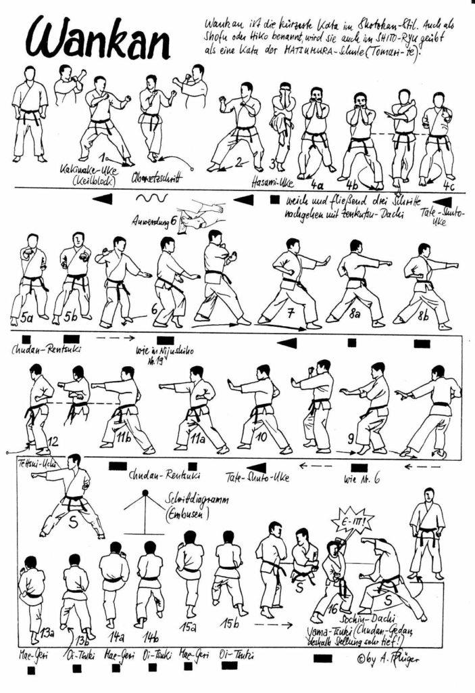

Wankan

- Yoi andando in Hachiji Dachi
- Spostare piede sinistro a 45° ed eseguire Morote Kakiwake Jodan
- Spostando il piede sinistro, Tsugiashi verso destra a 45°, eseguire Morote Kakiwake Jodan
- Sollevare il ginocchio destro a 45°, mantenendosi in equilibrio sul piede sinistro, ed eseguire Morote Soto Uke Jodan con le due braccia davanti al viso in contatto fra loro
- Mantenendo la posizione delle braccia, appoggiare la gamba destra davanti
- Mantenendo la posizione delle braccia, avanzare con Hidari Kae Ashi (un passo)
- Mantenendo la posizione delle braccia, avanzare ancora di un passo con Migi Kae Ashi terminando in Migi Fudo Dachi ed eseguendo Hidari Gyaku Tate Shuto
- Sul posto, eseguire Ren Tzuki Chudan: destro poi sinistro
- Spostare la gamba sinistra di 90° verso sinistra in Hidari Neko Ashi Dachi ed eseguire Osa Uke Gedan (braccio sinistro sopra il destro)
- Avanzare con la gamba destra ed eseguire Gyaku Tate Shuto Chudan sinistra
- Sul posto, eseguire Ren Tzuki Chudan: destro poi sinistro
- Spostare la gamba sinistra di 180° verso sinistra in Hidari Neko Ashi Dachi ed eseguire Osa Uke Gedan (braccio sinistro sopra il destro)
- Avanzare con la gamba destra ed eseguire Gyaku Tate Shuto Chudan sinistra
- Sul posto, eseguire Ren Tzuki Chudan: destro poi sinistro
- Spostare la gamba destra verso destra di 90° in posizione Kiba Dachi ed eseguire Yoko Tzuki destro
- Avanzare calciando Hidari Mae Geri insieme a Oi Tzuki Chudan
- Avanzare calciando Migi Mae Geri insieme a Oi Tzuki Chudan
- Avanzare calciando Hidari Mae Geri insieme a Oi Tzuki Chudan
- Spostando il piede destro di 180° dietro, eseguire Mawatte in Migi Fudo Dachi destro mentre si carica al fianco sinistro ed eseguire Yama Tzuki
- Ritornare con la gamba destra
- Yame